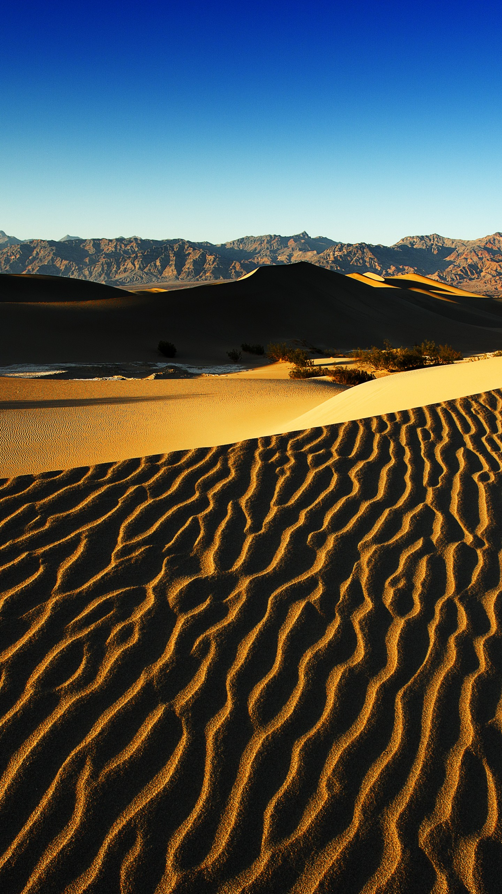

Sport – Wikipédia
- Új Jogtár bejelentkezés - jogtar.hu
Peak Sport and Health Kft. Üzlet: address 1037 Budapest, Szépvölgyi út 39 nyitva: H-P: 10-17, Sz: 10-14 óra közt; phone +36-30/4503290 megrendelések: H-P: 10-15 óra közt; email webshop @ peak-sport.hu információ: H-V: 0-24 óra közt - Sport - Blikk
A sport meghatározott célú mindennapos tevékenység, a mindennapoktól különböző környezetben; célja a testedzés, versenyzés, a szórakozás, eredmény elérése, a képességek fejlesztése. A kitűzött cél határozza meg a sport jellegét, a sportoló (vagy csapat) képességei és bátorsága mellett. A sport kifejezés az angolba származott francia „desporter ... - Sport – Wikipédia
A TTBK Sport 8 éve foglalkozik tippmix tippek, sportfogadás tippek közvetítésével valamint sportelemzések szolgáltatásával nagy publikum előtt.Sok más tippmix tippes oldallal ellentétben statisztikai analitikával és bankroll menedzsmenttel is szolgálunk. Széles palettáját átölelik tehát a tevékenységi köreink a sportfogadási szakmának, így nagyon sok gambler ... - Sport: Nehezen felejthető cikkben tiszteleg Kubatov Gábor ...
Egy sport vagy szakág akkor kerül be az olimpia programjába, ha a NOB úgy határoz, hogy világszerte népszerű, tehát elég nagy a részt vevő országok száma. A NOB ezen döntése függ az olimpiai játékokon való résztvevők számától: több versenyszám van a férfiak számára (mivel több férfi versenyzik), illetve több ... - Sport | Paraméter - parameter.sk
We would like to show you a description here but the site won’t allow us. - Helyi sport | KISALFÖLD - kisalfold.hu
Sport / 2 napja Torna csb – Győri siker a férfiak első fordulójában A Győri AC nyerte a férfi tornászok csapatbajnokságának első fordulóját, amelyre pénteken Budapesten került sor. - Tippmix tippek, prémium sportfogadás tippek és elemzések ...
Sport Megnyerte második debreceni edzőmeccsét is a katari labdarúgó-válogatott Katarnak házigazdaként nem kell selejtezőt játszania a jövő évi világbajnokság előtt. - Olimpiai sportágak – Wikipédia
Hipnotikus erejű összefoglalóval ünnepelte a Nemzeti Sport Kubatov Gábor Fradi-elnökségének tíz évét: már az szokatlan, hogy bármilyen klubelnök produkcióját ennyire lelkesen ünnepli egy sportújság még akkor is, ha véletlenül épp a Fidesz pártigazgatójáról is van szó, de a cikket jegyző Csillag Péter igazi hőstörténetet költött az előtte romokban lévő klub ... - Sport | Magyar Nemzet
Ha még nem rendelkezik felhasználónévvel és jelszóval, kérjük regisztráljon! A regisztrációhoz készítse elő online regisztrációs azonosítóját, melyet a termék számláján juttatunk el Önnek. - PEAK Sport | Sportruházat és Egészség
Sport. Feljelentették a magyar futballistákat a románok. A szombati U21-es Eb-csoportmeccsen történtek miatt tett panaszt a román szövetség az UEFA-nál. Lewandowski mégsem játszik az angolok ellen. A lengyel szövetség indoklása szerint a Bayern München támadója kisebb térdsérülést szenvedett.
Sport
A Wikipédiából, a szabad enciklopédiából Ez a közzétett változat , ellenőrizve : 2020. november 13. 2 változtatás vár ellenőrzésre.Pontosság ellenőrzött
Ugrás a navigációhoz Ugrás a kereséshez Sport a gyerekkortól. A futball egy csapatsport , aminek szociális jelentése van.A sport meghatározott célú mindennapos tevékenység, a mindennapoktól különböző környezetben; célja a testedzés, versenyzés, a szórakozás, eredmény elérése, a képességek fejlesztése. A kitűzött cél határozza meg a sport jellegét, a sportoló (vagy csapat) képességei és bátorsága mellett. A sport kifejezés az angolba származott francia „desporter” (mulatságoknak élő) szóból származik. Az angolban a 15. század közepe táján fordul elő először „szórakozás, időtöltés” értelemben. A 16. században már különféle játékok játszására alkalmazták, de főleg a szabadban végzett szabadidős tevékenységekre. Ekkor még sem a görög αγων (agón, verseny, mérkőzés), sem az αθλον (athlon, küzdelem díjért) jelentéseit nem értették bele.
Tartalomjegyzék
1 A sport története 1.1 Őstörténet 1.2 Mezopotámia 1.3 Ókori Kína 1.4 Ókori Egyiptom 1.5 Ókori Görögország 1.6 Modern európai és a világsport fejlődése 2 A sportok osztályozása 2.1 Versenyzés 2.2 Ellenfél 2.3 Teljesítmény 2.4 A kategóriák kombinációja 3 További információkA sport története [ szerkesztés ]
A sport történelmen átívelő fejlődése sokat elárul a társadalmi változásokról és a sport természetéről.
Úgy tűnik, a sport magába foglalja az emberi képességek öncélú fejlesztését és a képességek gyakorlati alkalmazhatósága miatti fejlesztését egyaránt. Ebből következik, hogy a sport feltehetőleg az emberiséggel egyidős, és a kezdetektől hasznos módja lehetett a tanulásnak és fejlődésnek.
Természetesen ahogy haladunk visszafelé az időben, egyre kevesebb bizonyíték támasztja alá ezt a feltételezést.
Őstörténet [ szerkesztés ]
Öttusa-terepfutásA történelem előtti időkből sok felfedezés – például ausztrál, afrikai és francia (lásd: Lascaux ) barlangrajzok – mutat be rituális ceremóniákat. A kormeghatározások alapján van, amelyik lelet több mint 30 ezeréves.
A líbiai sivatagban talált kőkorszaki rajzok más egyebek mellett íjászatot és úszó embereket ábrázolnak.
Maga a művészet nem más, mint példa azokra a tevékenységekre, amelyek nem a létfenntartás problémakörébe tartoznak, és bizonyítékot szolgáltat arra, hogy volt szabadidő az ilyen tevékenységek végzésére. Emellett a rajzok más, nem létszükségnek számító tevékenységeket mutatnak be, mint a ceremóniák stb.
Ezért, bár az erre vonatkozó közvetlen bizonyítékok száma kevés, arra következtethetünk, hogy már ebben az időben is léteztek sportnak számító tevékenységek. A sport gyökerei összefonódnak az emberiség gyökereivel.
Mezopotámia [ szerkesztés ]
A valódi sporttevékenységek első dokumentumai a mezopotámiai eposzokban gyakran feltűnő birkózás . A birkózás folyhatott életre-halálra is, de eldönthettek vele vértelenül nagyobb konfliktusokat is. A Gilgames-eposzban Gilgames és Enkidu többször birkózik egymással, ez a motívum később a görög mitológiában visszatérő elemmé válik, főleg Héraklész birkózásainál.
A birkózáson kívül más mai versenysport az i. e. 3. évezred túlnyomó részéből nem ismert, az egyéb sportok közül a ma sportnak tekintett vadászat létezett még, mint előkelő szabadidős tevékenység. Az i. e. 3. évezred vége felé Urukban már jelen volt az ökölvívás , amit egy agyagtáblán ábrázolt bokszoló pár igazol.
Ókori Kína [ szerkesztés ]
Tárgyi leletek és épületek maradványai bizonyítják, hogy Kínában már i. e. 4 000 körül is létezett sport. A kínai sport eredete és fejlődése visszavezethető a korabeli foglalkozásokra, háborúkra és szórakoztatásra.
A gimnasztika népszerű sportnak számított Kína múltjában. Ez ma is így van; a kínai akrobaták ügyessége világszerte elismert.
Ókori Egyiptom [ szerkesztés ]
Az ókori Egyiptom sportjai is szorosan kapcsolódtak a mindennapi élet eseményeihez. Egyiptom életében a Nílus központi szerepet játszott és játszik, így nem meglepő, hogy ehhez köthető sportok alakultak ki, mint az úszás és a horgászat. Ezenkívül például gerelyhajítással, magasugrással, birkózással is foglalkoztak. Ez utóbbi a legelső ismert sport Egyiptomban is, az i. e. 25. századi Ptahhotep masztabájában birkózókat ábrázoló reliefek vannak. I. e. 19. századiak az első labdajáték-ábrázolások, i. e. 14. századi az első ismert ökölvívó jelenet Heruef egyik reliefjén. Ugyanitt botvívás is feltűnik. A lótenyésztés és a harci szekér elterjedése után a kocsihajtók versenyei is megjelennek az Újbirodalomban .
Ókori Görögország [ szerkesztés ]
Római bronz reprodukciója Mürón Discobolosának, 2. századAz ókori Görögország idején a térségben már jó ideje léteztek a különféle sportok az ókori Keleten , ezek egy részének átvétele és meghonosítása ismét a görög kultúra mély keleti kapcsolatait igazolja. A görögök ősi mítoszaikban és regéikben a testi erőre, ügyességre és ravaszságra helyezték a legnagyobb hangsúlyt, hőseik, héroszaik egytől egyig kiváló katonák. E tulajdonságok fejlesztésére és összemérésére alkalmazták a birkózást, futást, ökölvívást, gerelyhajítást, diszkoszvetést, és a kocsiversenyeket, valamint olyan versenysportokat, amiket ma már nem űznek, mint a fegyveres futás, a helyből távolugrás vagy az ógörög mintájú sokszor véres és maradandó károsodásokat okozó pankráció .
A görögök mindig díjazásért küzdöttek e sportágakban, ez volt az athlon (αθλον). A harc közbeni küzdelmet agón nak nevezték (αγων). Az athlon és az agón összefügg, aki az athlonban ügyes, az megállja a helyét az agónban is. Ezért a görög harci szellem elsődleges forrása az athlon volt. A versenyeket általában valakinek vagy valaminek az emlékére rendezték. Ezek legkorábbi szemléltetései a homéroszi Iliaszban olvashatók, például a Patroklosz halála utáni versenyeket, ahol Homérosz nem felejti el lejegyezni a különböző versenyszámok győzteseit és a jutalmukat. Mindig kizárólag az első helyezettet díjazták, a második vagy harmadik helyért semmi sem járt. Csak egy győztes és az összes többi vesztes létezett számukra.
Négyévente megrendezték az olümpiai játékokat , a Peloponnészoszi-félsziget egy kis falujában, Olümpiában . A játékok nem csupán sportesemények voltak, hanem az egyéni teljesítmények, a kultúra, művészet, építészet, és a görög istenek ünnepei. Négy nagy, pánhellén játék volt, az olümpiai mellett az iszthmoszi játékok , a nemeai játékok , és a püthói játékok , de szinte minden nagyobb városkörnyéknek volt helyi versenye is, mint Athénban a Panathénaia , Spártában a Karneia . Ezekből háromszáznál is több volt.
Mivel a játékok szent eseménynek számítottak, a görögök ez időre beszüntették az ellenségeskedést. Az épp folyamatban lévő háborúkban fegyverszünetet léptettek életbe. A nyilvános kivégzéseket szintén felfüggesztették. A fegyverszünet ideje alatt a békésen, civilizált körülmények között küzdöttek meg egymással. A négy játékszínhely miatt minden évre jutott egy-egy nagy jelentőségű rendezvény. Ezek közül az olümpiai játékok a legismertebbek. Ezeken egy idő után már nem csak sportviadalok voltak, hanem például zenei és versmondás-versenyek, vagy festők versenye.
Modern európai és a világsport fejlődése [ szerkesztés ]
A sport az ókori olimpiáktól napjainkig egyre jobban szervezetté és szabályozottá vált. Az élelemszerzéshez és túléléshez szükséges tevékenységeket, mint a vadászat vagy a horgászás, egyre inkább a versenyzés vagy a kikapcsolódás kedvéért űzték. Az ipari forradalom és a tömegtermelés megjelenése több szabadidőhöz is vezetett, amely lehetővé tette a tömeges hozzáférést a sporthoz, mind nézőként, mind sportolóként.
A tömegtájékoztatás és globális kommunikáció megjelenésével ez a trend tovább folytatódott. A professzionalizmus uralkodóvá vált, ezzel tovább népszerűsítve a sportokat.
Napjainkban egyre népszerűbbé válnak a veszélyes és extrém sportok , amelyek a mindennapi élet rutinjából való elmenekülés lehetőségét kínálják.
A sportok osztályozása [ szerkesztés ]
A modern sportokat nagy fokú szervezettség és bonyolult szabályok jellemzik Bővebben: Sportágak listájaAz alábbi rendszer a sportokat igyekszik osztályozni céljuk szerint. A lista inkább szemléltető, mint átfogó jellegű.
Versenyzés [ szerkesztés ]
Emberi ( futás , úszás , tájfutás , ...) Emberi erővel hajtott ( kerékpározás , evezés , kajak-kenu , ...) Külső erővel hajtott ( autóversenyzés , vitorlázás , jégvitorlázás , lovaglás , ...)Ellenfél [ szerkesztés ]
Egyéni küzdősport ( boksz , vívás , cselgáncs , szumó , ...) Egyéni pálya ( tenisz , fallabda , kerékpározás ...) Csapat ( futball , jégkorong , röplabda, kosárlabda, amerikaifutball , gyeplabda , ...)Teljesítmény [ szerkesztés ]
Célzás ( lövészet , íjászat , golf , paintball , ...) Megjelenítés ( gimnasztika , testépítés , ...) Erő ( súlyemelés , súlylökés , karbirkózás , erőugrás ...) Gyorsaság ( futás , síelés , úszás , ...) Ellenféllel szemben elért találatok száma ( futball , kosárlabda , ökölvívás , vívás , ...) Irányítási képesség ( autóversenyzés , díjlovaglás , bob , ...) Szellemi ( sakk , go , ...)A kategóriák kombinációja [ szerkesztés ]
Wikihírek egyik portáljához itt egy link: SportFentiek tetszőlegesen kombinálva, mint például:
atlétika (emberi, csapat, erő)További információk [ szerkesztés ]
A Wikimédia Commons tartalmaz Sport témájú médiaállományokat. sport.lap.hu Archív sportplakátok Sportolók étrendje Nemzetközi katalógusok WorldCat LCCN : sh85126887 GND : 4056366-2 BNF : cb133188907 KKT : 00571722 Sportportál • összefoglaló, színes tartalomajánló lap A lap eredeti címe: „ https://hu.wikipedia.org/w/index.php?title=Sport&oldid=23247187 ” Kategória : Sport Rejtett kategóriák: Wikipédia-szócikkek LCCN azonosítóval Wikipédia-szócikkek GND azonosítóval Wikipédia-szócikkek BNF azonosítóval Wikipédia-szócikkek KKT azonosítóvalNavigációs menü
Személyes eszközök
Nem vagy bejelentkezve Vitalap Közreműködések Fiók létrehozása BejelentkezésNévterek
Szócikk VitalapVáltozatok
Nézetek
Olvasás Nem ellenőrzött változat Szerkesztés LaptörténetTöbb
Keresés
Navigáció
Kezdőlap Tartalom Kiemelt szócikkek Friss változtatások Lap találomra TudakozóRészvétel
Kezdőknek Segítség Közösségi portál Kapcsolatfelvétel AdományokEszközök
Mi hivatkozik erre? Kapcsolódó változtatások Speciális lapok Hivatkozás erre a változatra Lapinformációk Hogyan hivatkozz erre a lapra? Wikidata-adatlapNyomtatás/exportálás
Könyv készítése Letöltés PDF-ként Nyomtatható változatTárslapok
Wikimédia Commons WikihírekMás nyelveken
English Аҧсшәа Afrikaans Alemannisch አማርኛ Aragonés Ænglisc العربية الدارجة مصرى Asturianu Aymar aru Azərbaycanca تۆرکجه Башҡортса Boarisch Žemaitėška Беларуская Беларуская (тарашкевіца) Български भोजपुरी Bislama Bamanankan বাংলা བོད་ཡིག Brezhoneg Bosanski Буряад Català Chavacano de Zamboanga Нохчийн Cebuano کوردی Corsu Qırımtatarca Čeština Kaszëbsczi Чӑвашла Cymraeg Dansk Deutsch Zazaki Ελληνικά Esperanto Español Eesti Euskara Estremeñu فارسی Suomi Võro Na Vosa Vakaviti Føroyskt Français Arpetan Furlan Frysk Gaeilge 贛語 Kriyòl gwiyannen Gàidhlig Galego Avañe'ẽ Bahasa Hulontalo ગુજરાતી Gaelg 客家語/Hak-kâ-ngî Hawaiʻi עברית हिन्दी Fiji Hindi Hrvatski Kreyòl ayisyen Հայերեն Interlingua Bahasa Indonesia Interlingue ГӀалгӀай Ido Íslenska Italiano 日本語 Patois Jawa ქართული Qaraqalpaqsha Taqbaylit Қазақша Kalaallisut ಕನ್ನಡ 한국어 Kurdî Коми Кыргызча Latina Ladino Lëtzebuergesch Лезги Lingua Franca Nova Limburgs Ligure ລາວ Lietuvių Latgaļu Latviešu Basa Banyumasan Олык марий Македонски മലയാളം Монгол मराठी Bahasa Melayu Malti Mirandés Эрзянь مازِرونی Napulitano Plattdüütsch Nedersaksies नेपाली नेपाल भाषा Nederlands Norsk nynorsk Norsk bokmål Novial Nouormand Sesotho sa Leboa Occitan Livvinkarjala ਪੰਜਾਬੀ Kapampangan Papiamentu Deitsch Norfuk / Pitkern Polski پنجابی پښتو Português Runa Simi Rumantsch Română Русский Русиньскый Kinyarwanda Саха тыла Sardu Sicilianu Scots Srpskohrvatski / српскохрватски සිංහල Simple English Slovenčina Slovenščina Gagana Samoa Soomaaliga Shqip Српски / srpski Sesotho Seeltersk Sunda Svenska Kiswahili Ślůnski தமிழ் తెలుగు Тоҷикӣ ไทย ትግርኛ Türkmençe Tagalog Türkçe Xitsonga Татарча/tatarça Українська اردو Oʻzbekcha/ўзбекча Vèneto Vepsän kel’ Tiếng Việt Walon Winaray 吴语 IsiXhosa მარგალური ייִדיש Vahcuengh Zeêuws 中文 Bân-lâm-gú 粵語 Hivatkozások szerkesztése A lap utolsó módosítása: 2020. november 13., 18:31 A lap szövege Creative Commons Nevezd meg! – Így add tovább! 3.0 licenc alatt van; egyes esetekben más módon is felhasználható. Részletekért lásd a felhasználási feltételeket . Adatvédelmi irányelvek A Wikipédiáról Jogi nyilatkozat Mobil nézet Fejlesztők Statisztikák Sütinyilatkozat

Mauris vulputate dolor
Rutrum fermentum nibh in augue praesent urna congue rutrum.
Etiam posuere